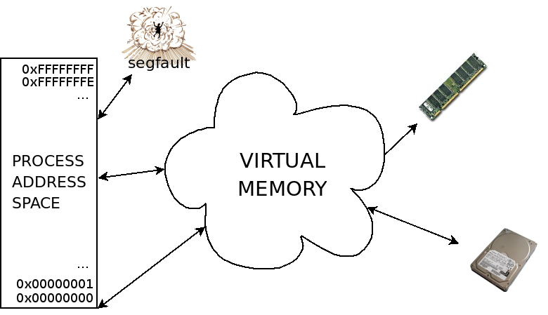
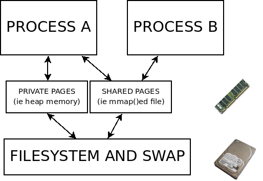
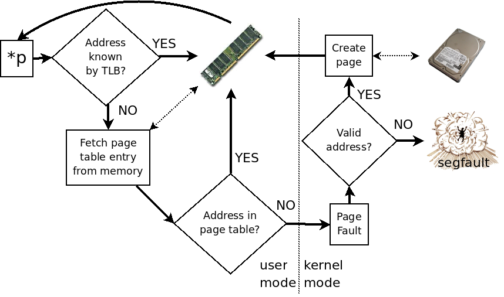

vmtouch
Intro to virtual memory
Doug Hoyte
Black-box view of virtual memory

Pages
- Unix divides the address space of each process into pages
-
At any given time, a page may be:
- Resident in physical memory
- Swapped out to disk/stored in a file to make room for other pages
- VM addresses point to pages, physical addresses point to frames
Filesystem Cache
- In-memory cache of the pages of files
- Extremely important optimisation
- Cache is shared by all processes on system
- A warmed up unix system should have very little "free" memory — it should cache as many filesystem pages as possible
- Directories, file meta data, etc are cached in related memory called the vnode pool
Paging System

How big are pages?
- Depends on hardware
- X86 and X86-64 base pages are 4K
- SPARC base pages are 8K
- ARM: usually 4K but can be higher or (v4/5) lower
-
4K or 8K has been typical since the 60s
- Most CPUs have "huge pages"
Translation Lookaside Buffer
- Component of the MMU hardware
- Super-fast cache of "virtual" page addresses to "real" frame addresses
- Essential for efficient virtual memory
- Usually separate TLBs for instructions and data
- TLBs are small
TLB reach = page size * TLB capacity
- This is the maximum size working set you can have without causing TLB misses
-
Intel Xeon Core:
-
Data TLB 4K pages: 256
TLB reach = 4K * 256 = 1M
-
Data TLB 4M pages: 8
TLB reach = 4M * 256 = 32M
Understanding a memory dereference

CPU support for "Huge Pages"
-
X86 Pentium Pro and later support three page sizes
4K, 2M, 4M
-
SPARC
8K, 64K, 512K, 4M, 32M, 256M
-
X86-64
4K, 2M, 4M, 1G
OS Support for Huge Pages
- Solaris is possibly the best
-
Multiple Page Size Support since Solaris 9
- Transparent to applications
-
Great tools for analyzing MMU performance
$ uname -a
SunOS neptune 5.10 Generic_127112-11 i86pc i386 i86pc Solaris
$ pagesize -a
4096
2097152
$ uname -a
SunOS pluto 5.10 Generic_138888-03 sun4v sparc SUNW Solaris
$ pagesize -a
8192
65536
4194304
268435456
OS Support for Huge Pages
- FreeBSD: Transparent huge page support on x86 and x86-64 since FreeBSD 7.2
-
Linux: HUGETLBFS
- But see RFC: Transparent Hugepage Support message to linux kernel list, Oct 26th, 2009
- Win32: No support for huge pages
Huge Pages in Kernel
- Kernel is a special case
- Linux, BSD, Solaris all use huge pages in the kernel when mapping the kernel binary itself
System calls for managing the page cache
| mmap(2) | posix_fadvise(2) |
| mincore(2) | posix_madvise(2) |
| msync(2) | posix_fallocate(2) |
| madvise(2) | readahead(2) |
| mprotect(2) | memcntl(2) |
| mlock(2) | meminfo(2) |
But where are the command line utilities?
Demo
Let's touch some memory
vmtouch
http://hoytech.com/vmtouch/
Doug Hoyte